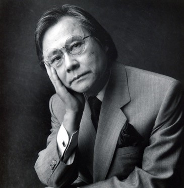
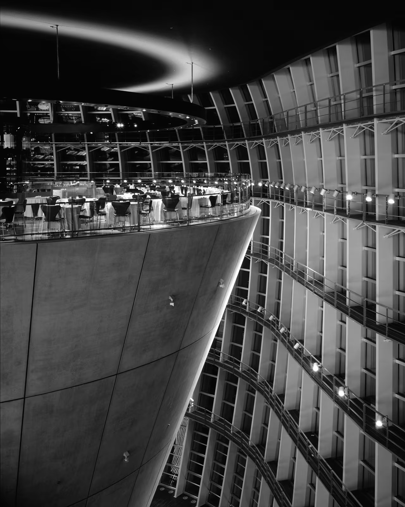
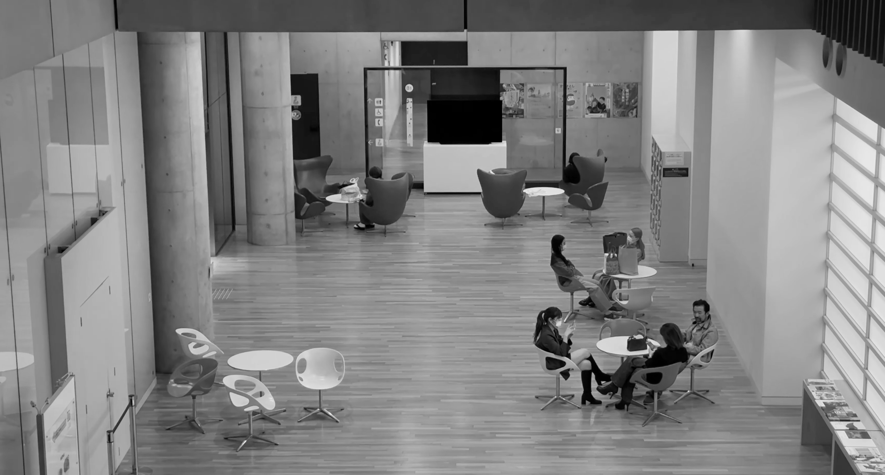
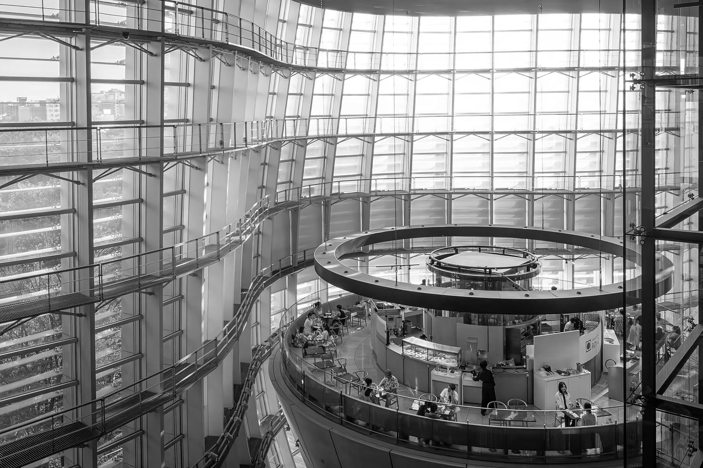
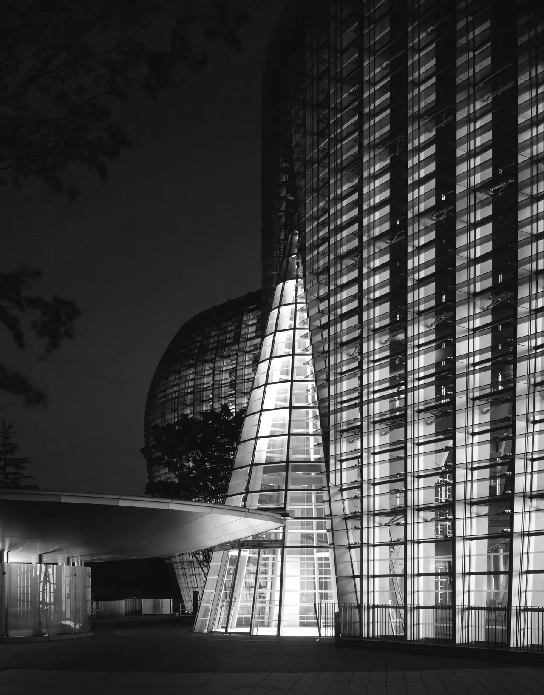
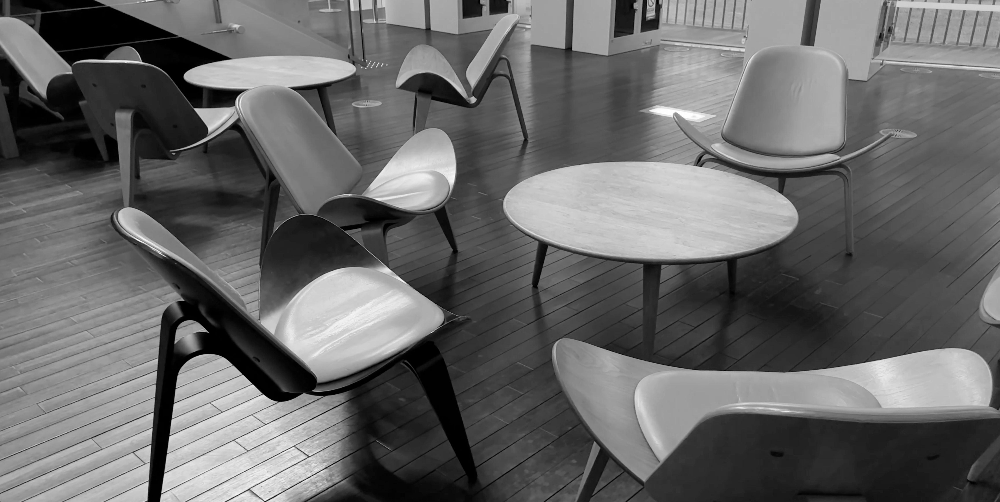
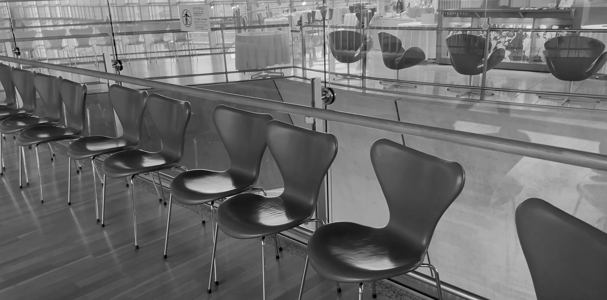
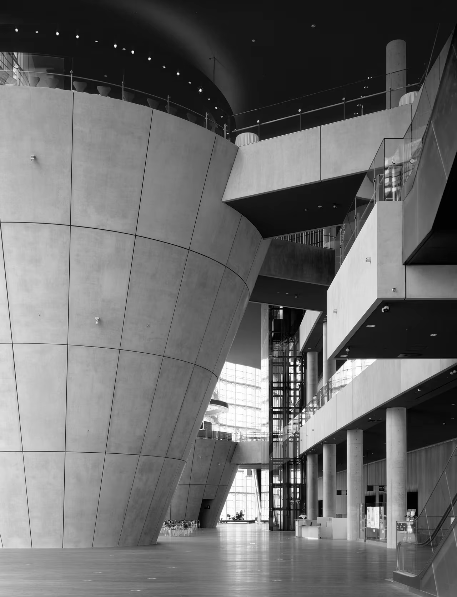

The National Art Center, Tokyo
국립 신미술관

Kisho Kurokawa쿠로카와 키쇼
黒川紀章 · 1934–2007
Metabolism Movement, Co-founder
Kisho Kurokawa Architect & Associates
이렇듯 소장품과 미술관의 파워는 불가분의 관계에 있는데요, 다시 롯폰기의 미술관 얘기로 넘어오면 산토리 미술관이나 모리 미술관 등등 미술관이 많다는 롯폰기에서 방금 전에 랭킹에 올라간 미술관은 단 한 곳뿐입니다. 바로 일본의 다섯 번째 국립 박물관인 국립신미술관이 그 주인공이죠. 그런데 특이한 점은 여기에는 소장품이 단 하나도 없다는 것인데요, 그렇다면 무엇이 그토록 많은 방문자들을 끌어모으는 것일까요?


국립신미술관은 도쿄 롯폰기역 또는 노기자카역에서 쉽게 찾아갈 수 있는데요. 이 동네 자체가 상당히 조용한 곳이라 도심의 한복판이 아닌 교회에 있다는 느낌이 들 정도죠. 5번 출구로 나와서 왼쪽으로 조금만 걸으면 큼지막한 입구가 등장합니다. 이쪽은 주로 전시 작품의 반입 반출을 하는 하역장으로 바로 연결되는 곳인데요, 정문을 놔두고 이쪽으로 들어가는 것을 추천하는 이유는 이 미술관의 트레이드마크이기도 한 언덕을 따라 굽이치고 있는 커튼홀 파사드를 쭉 훑으면서 진입할 수 있기 때문입니다.
유리벽이 수직 수평으로 나열되어 마치, 파도치는 듯한 덩어리를 만들고 있으며, 그 굽이치는 파도의 크기가 주는 압도감이 어마어마하죠. 차가운 소재임에도 부드러운 곡선을 이루고 있어서인지, 차가움이 덜한 느낌인데요. 덕분에 주변을 따라 심어져 있는 나무들과 꽤 조화롭게 잘 어울리는 모습입니다.


멀리서 보면 규격화된 직사각형 루버들의 단순한 나열처럼 보이기도 하지만, 가까이서 보면 기둥의 각도나 루버 하나하나의 곡면이 전부 미세한 차이로 다르게 기울어지고, 다르게 깎여서 더욱 유기적인, 진짜 자연물에서나 볼 법한 곡선이 반복되어 파도를 만들고 있음을 알 수 있습니다. '파도'는 일본의 미술을 얘기할 때 빼놓을 수 없는 자연물이죠. 심지어 이 미술관을 디자인한 일본 건축계의 거장, 쿠로카와 키쇼는 "일본 건축의 새로운 파도"라는 책까지 쓴 바가 있습니다.(??) 파도로 한때 대변되던 일본발 오리엔탈리즘을 의식하기도 한 것일까요?
이곳은 쿠로카와 키쇼의 생전에 마지막으로 나온 그의 유작인데요, 그는 건축물의 생물학적 신진대사를 뜻하는 일본의 유기적 건축 사조 '메타볼리즘'을 만든 주역이며, 대세에 반하는 꽤 파격적인 프로젝트를 자주 선보인 바 있습니다.


이곳 국립 신 미술관은 일본에서 박물관을 포함하여 국립이라 이름이 붙은 다섯 번째 미술관으로, 우에노에 있는 도쿄도 미술관의 기획 전시, 공모전, 미술 교육 등의 역할을 분담하기 위한 목적으로 설립되었다고 합니다. 다시 말해 이곳은 애초부터 소장품 수집보다는 대규모 기획전시와 이벤트를 위해 만들어진 공간인 셈인데요. 이러한 미술관의 성격 또한 쿠로카와 키쇼의 작품과 뭔가 어울린다고 생각이 든 것이, 상설전이 없이 모든 전시장이 기획전으로서 쉴 새 없이 색을 달리하고 작품들이 끊임없이 들어갔다 나갔다 하는 게 마치 정말로 어떤 거대 생물체의 신진대사를 보는 것 같달까요?
그래서 이곳은 전시 공간의 면적만 무려 14,000m²에 달하는 일본에서는 비교 자체를 불허하는 최대급의 크기를 자랑하고 있으며, 전시장을 제외한 모든 면이 유리벽으로 되어 있기 때문에 조명이 없음에도 상당히 밝은 것이 특징입니다. 그만큼 모든 곳에서 압도적인 공간감을 보여주고 있습니다. 그 공간감의 비밀은 그의 시그니처인 원뿔에 있는데요, 쿠로카와 키쇼 그는 여기에서 세 개의 원뿔을 사용했습니다. 그리고 입구의 원뿔을 제외한 나머지 두 개의 원뿔은 똑바로 서 있지 않고 거꾸로 서서 땅속에 박혀 있는데요, 역원뿔의 둘레가 가장 넓은 위쪽에는 레스토랑과 카페가 위치해 있으며, 둘레가 작아지는 아래쪽은 창고, 비상 계단, 화장실 등으로 채워져 있습니다.



이로 하여금 광활한 공간감은 유지한 채 위쪽에 수직 공간은 야무지게 활용하고 1층의 바닥 면적은 훨씬 넓게 사용할 수 있는 것이죠. 사실 바깥에서 본 유리벽의 비밀 또한 이 여원뿔에 있다고 말할 수 있겠습니다. 잘 보시면 유리벽이 안쪽에 여원뿔들을 일정한 간격으로 따라서 두르고 있죠. 이 건물을 주무르고 있는 메인 조형, 그 자체라고 여겼던 바깥쪽의 물결들이 사실은 여원뿔들이 일으키고 있는 파도일 뿐이었던 것입니다. 보통 딱딱하기 그지없는 건축물에서 마치 바람과 파도의 관계 같은, 자연물의 상호작용을 보는 듯한 생동감이 느껴진달까요? 바깥을 먼저 보고 안으로 들어오기 때문에 뭔가 반전이 있는 예술 작품을 보는 듯한 느낌도 나고요.
게다가 역원뿔이 노출 콘크리트로 묵직하게 솟아서 그 그림자를 받아 웅장함을 더하고 있으니 극강의 조형미에 효율성까지 챙긴 그야말로 그의 원뿔 사랑이 극대화된 걸작이라고 할 수 있겠습니다.